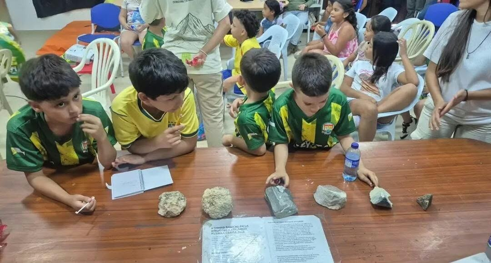

Semillero de Geología Estructural y Tectónica
Estudiamos fallas, pliegues y fracturas para entender cómo se ha formado y transformado el territorio, y llevamos ese conocimiento a estudiantes y comunidades de Santander.
Vía a Zapatoca, Santander. Salida de campo, octubre de 2026.
Entender la Tierra y compartirlo
Somos estudiantes de Geología que se reúnen cada semana para aprender, investigar y divulgar la geología estructural.
-
Formación
Talleres, cursos y charlas para interpretar datos y estructuras: brújulas, cortes geológicos, proyección estereográfica, mecanismos focales e interpretación sísmica.
-
Campo
Salidas a afloramientos de Santander y Antioquia para medir, dibujar e interpretar fallas, pliegues y deformación en las rocas.
-
Apropiación social
Jornadas con colegios y comunidades, como Los Santos y Cepitá, para que la gente conozca la geología del territorio que habita.
- Actividades registradas
- 29
- Salidas y jornadas con comunidad
- 6
- Integrantes este año
- 11
- Proyectos de extensión
- 2
Conociendo la geología de Cepitá
Durante dos días compartimos con la comunidad de Cepitá, en el Cañón del Chicamocha: charlas sobre la Falla de Bucaramanga y el Nido Sísmico, juegos para reconocer rocas y caminatas por Loma Colorada y el río Umpalá.
Fue un espacio para enseñar, pero también para escuchar y aprender del conocimiento que la comunidad tiene de su territorio.



Proyecto de extensión de 2026, Cepitá (Santander).
Lo que estudiamos
El semillero aporta a las líneas del Grupo de Investigación en Geología Básica y Aplicada (GIGBA): Geología Ambiental y Amenazas Geológicas, Geología del Cuaternario y Geología Experimental.
- Fallas y cinemática
- Pliegues y vergencia
- Fracturas y criterios de Riedel
- Tectónica de Colombia
- Sismotectónica y mecanismos focales
- Análisis de esfuerzos
- Interpretación sísmica
- Movimientos en masa
- Geoeducación
Actividades
Ver todas las actividadesEn Instagram
Allí publicamos cada charla, taller y salida de campo.
“No es necesario llegar sabiendo todo; lo importante es tener curiosidad y disposición para aprender.”
¿Quieres unirte?
Si estudias en la UIS y te interesa la geología estructural, escríbenos. Nos reunimos cada semana y siempre hay espacio para personas nuevas.